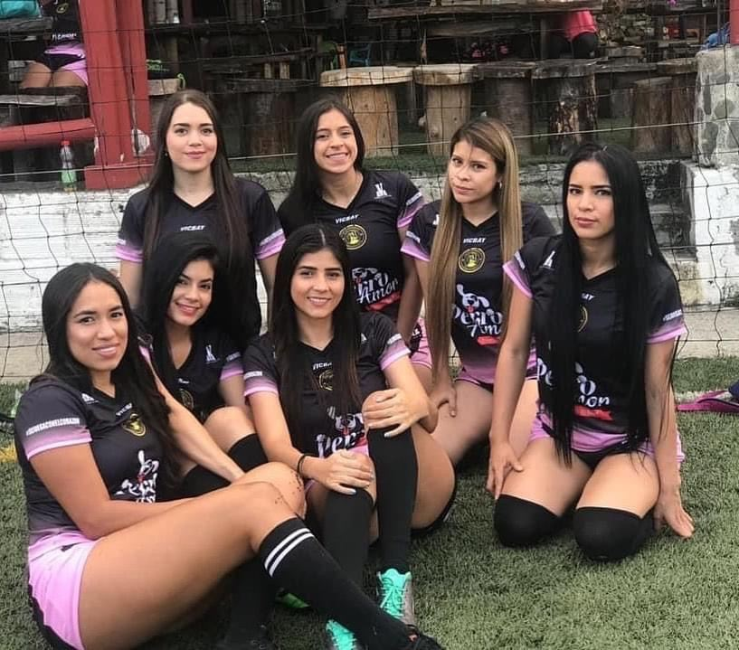

Norte
Lunes y sábadoCancha El Monumental
Av 3F Norte # 52
Dentro del Éxito de La Flora
Lunes 8:30 p.m.
Sábado 4:00 p.m.
Sedes
Sesiones de fútbol 6 en cancha sintética. Si el clima se pone adverso, el entrenador puede cancelar la clase para cuidar a las jugadoras.
| Sede | Lunes | Martes | Sábado |
|---|---|---|---|
| El Monumental · Norte | 8:30 p.m. | — | 4:00 p.m. |
| Tiro de Esquina · Sur 1 | 8:00 p.m. | — | 4:00 p.m. |
| 5.11 · Sur 2 | — | 8:00 p.m. | 4:00 p.m. |
Cancha El Monumental
Av 3F Norte # 52
Dentro del Éxito de La Flora
Lunes 8:30 p.m.
Sábado 4:00 p.m.
Cancha Tiro de Esquina
Cra 70 # 13-90
Al lado de Simon Parrilla
Lunes 8:00 p.m.
Sábado 4:00 p.m.
Cancha 5.11
Cra 56 # 12a-01
Entre la autopista y Paso Ancho
Martes 8:00 p.m.
Sábado 4:00 p.m.

Cada semana hay partido amistoso. Quien está en una categoría Plus, o es convocada a un torneo, puede jugar dos o más partidos.